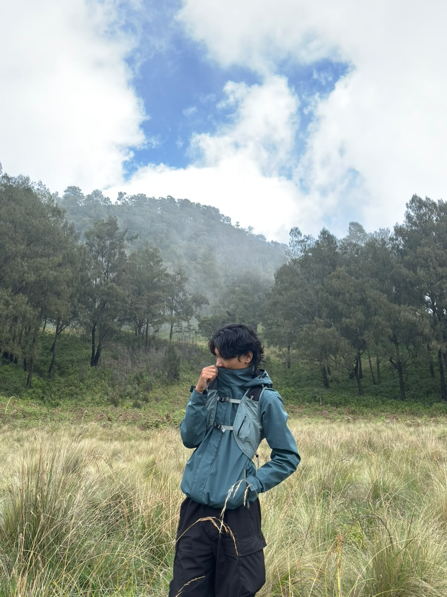

Bootstrap Clone
Halaman statis yang meniru halaman utama Bootstrap dengan navbar, section ikon, tema, dan footer.
HTML · Bootstrap · CSSPORTOFOLIO WEB
Saya sedang belajar membangun website yang responsif dan mudah digunakan dengan HTML, CSS, dan Bootstrap.
Lihat Proyek
TENTANG SAYA
Saya mempelajari pengembangan aplikasi web melalui praktikum dan proyek kecil. Saya senang menyusun tampilan halaman, mencoba komponen Bootstrap, dan melihat hasilnya bekerja di berbagai ukuran layar.
YANG SAYA PELAJARI
Menyusun struktur dan konten halaman web.
Membuat layout responsif dengan grid, komponen, dan kelas utilitas.
Mengatur warna, jarak, tipografi, dan tampilan khusus.
KARYA PILIHAN
Halaman statis yang meniru halaman utama Bootstrap dengan navbar, section ikon, tema, dan footer.
HTML · Bootstrap · CSSAplikasi Laravel untuk latihan konfigurasi awal, menjalankan server lokal, dan menyiapkan database SQLite.
Laravel · PHP · SQLiteKONTAK
Terima kasih sudah mengunjungi portofolio saya.